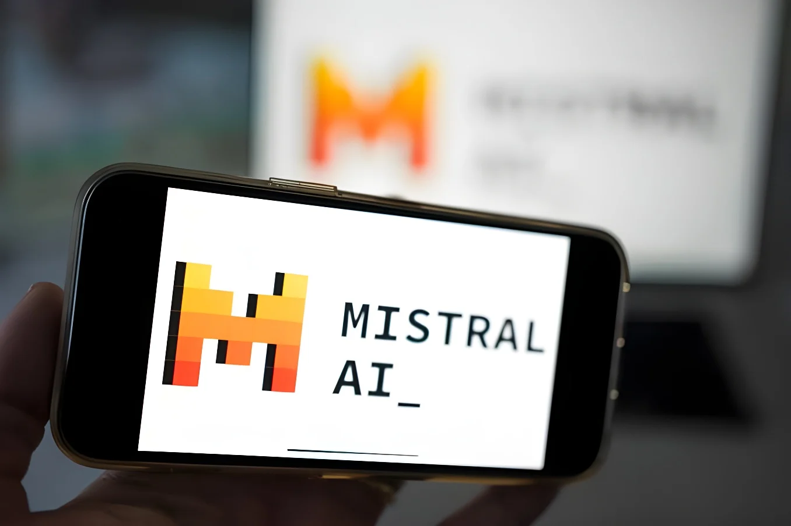

Le 6 octobre 2026, la start-up française Mistral AI a présenté en avant-première Mistral Large 4, surnommé « Le Chonk », un modèle multimodal de 1 000 milliards de paramètres dont les poids doivent être publiés le 27 octobre. L'entreprise le dit le meilleur modèle ouvert développé hors de Chine, notamment en cybersécurité. Les premiers classements indépendants le placent pourtant loin des meilleurs modèles fermés américains : Mistral se rapproche, sans encore rattraper la frontière.
Le mardi 6 octobre 2026, la start-up parisienne Mistral AI a dévoilé Mistral Large 4, surnommé « Le Chonk » en référence à un mème d'internet. C'est un modèle d'intelligence artificielle multimodal, qui traite le texte et les images, et dont la taille atteint environ 1 000 milliards de paramètres, ces réglages internes qui se modifient pendant l'entraînement. Il repose sur une architecture dite de « mélange d'experts » : à chaque requête, seuls 49 milliards de paramètres sont activés, ce qui réduit le coût de fonctionnement. Mistral dit l'avoir entraîné de zéro, pendant deux mois, sur environ 4 000 processeurs Nvidia Grace Blackwell installés dans ses centres de données en Europe, un nombre que d'autres sources ramènent à 3 800.
Pour l'instant, le modèle n'est accessible qu'en avant-première par l'interface de programmation de Mistral. Ses poids, c'est-à-dire les paramètres que chacun peut télécharger et faire tourner chez soi, doivent être publiés le 27 octobre. La licence n'a pas encore été précisée, et le détail de l'architecture et de la méthode d'entraînement est promis pour cette date.
Contrairement aux modèles fermés d'OpenAI, d'Anthropic ou de Google, accessibles seulement par leurs serveurs, un modèle à poids ouverts peut être installé par une entreprise ou un État sur sa propre infrastructure. Cet argument de souveraineté est au cœur du discours de Mistral : Large 4 peut être auto-hébergé ou utilisé via une région européenne dont l'exploitation est assurée de bout en bout par le groupe et soumise au seul droit européen. Meta, DeepSeek et Moonshot AI pratiquent aussi ce modèle, mais la figure de proue du genre est aujourd'hui chinoise.
Large 4 prolonge une série de publications commencée en septembre 2023 avec Mistral 7B, suivi de Mixtral en décembre, puis de Mistral Large en février 2024 et, en juin 2025, de Magistral, premier modèle de raisonnement de la maison. Son prédécesseur direct, Large 3, date de décembre 2025 et comptait 675 milliards de paramètres : la taille a presque augmenté de moitié en dix mois.
| Mistral Large 4 | Valeur |
|---|---|
| Paramètres au total | ≈ 1 000 Md |
| Paramètres actifs par requête | 49 Md |
| Processeurs d'entraînement | ≈ 4 000 |
| Durée d'entraînement | 2 mois |
| Puissance installée | ≈ 10 MW |
| Langues d'entraînement | > 160 |
Mistral met en avant la cybersécurité, où il revendique 93 % au test Cybench et 82 % à CyberGym-E2E, qui consiste à reproduire puis corriger des failles dans de vrais logiciels libres. Selon Le Grand Continent, ce serait le meilleur score annoncé à ce jour, tous modèles confondus. L'argument de l'entreprise est que les modèles fermés américains refusent souvent les tâches de défense, alors que les attaquants contournent leurs garde-fous : un modèle ouvert serait utilisable sans limite par les défenseurs. Le modèle vise aussi la finance, la conception de puces, la conception industrielle en 3D et l'analyse d'images satellites.
Publication prévue des poids de Large 4.
Aperçu de Mistral Large 4 par l'API.
Levée de 3 milliards d'euros (série D), valorisation supérieure à 21 milliards.
Mistral Large 3, 675 milliards de paramètres dont 41 actifs.
Levée d'environ 1,7 milliard d'euros, valorisation de 11,7 milliards, avec ASML.
Levée de 600 millions d'euros, valorisation de 5,8 milliards.
Création par Arthur Mensch, Guillaume Lample et Timothée Lacroix.
Le changement de ton est net. Il y a deux ans, Mistral comparait ses modèles à GPT-4. Pour Large 4, ses tableaux le mettent face à DeepSeek, Qwen et GLM, des modèles chinois, et il revendique la première place « hors de Chine » dans toutes les catégories qu'il cite. La formule est révélatrice : l'entreprise ne prétend pas battre les laboratoires chinois, ni surtout les modèles fermés d'OpenAI, d'Anthropic et de Google. Selon Le Grand Continent, ses équipes savent qu'elles sont en retard sur les modèles ouverts chinois, qui restent devant sur l'ensemble des tests.
« Nous allons sortir un modèle qui est essentiellement au même niveau que les meilleurs modèles chinois d'il y a un mois ou deux. »
— Guillaume Lample, cofondateur de Mistral AI, propos rapportés, octobre 2026Les premières évaluations extérieures sont plus mesurées que les annonces. Sur l'indice du site Vals AI, Large 4 obtient 48 % et se place autour de la 33e place sur 45 modèles, avec un meilleur rang, 6e sur 76, au test juridique de Harvey. Sur l'Artificial Analysis Cyber Index, il figure dans les cinq premiers, mais derrière un modèle chinois, MiMo-V2.6-Pro, sur l'ensemble. Mistral cite aussi une évaluation en aveugle de la qualité du code menée par Surge AI, où il arrive deuxième sur cinq, derrière Claude Opus 5 (3,74 contre 4,22), mais cette étude est rapportée par l'entreprise elle-même. CNBC note qu'il reste en retrait des meilleurs modèles sur le code.
| Test (site Vals AI) | Rang |
|---|---|
| Indice général | 33 / 45 |
| Finance Agent | 22 / 76 |
| Terminal-Bench 4.0 | 21 / 45 |
| Harvey, agent juridique | 6 / 76 |
L'annonce suit de moins d'un mois la levée de 3 milliards d'euros de série D, menée par Samsung, qui valorise Mistral à plus de 21 milliards d'euros, presque le double du tour précédent. ASML, le fabricant néerlandais de machines à puces, est entré au capital en 2025. Mistral présente Large 4 comme la première étape de la feuille de route financée par cet argent et vise un gigawatt de capacité de calcul en 2030. En janvier, à Davos, Arthur Mensch a annoncé un objectif de plus d'un milliard d'euros de chiffre d'affaires en 2026, un chiffre que seule la presse permet pour l'instant d'estimer.
L'écart de moyens reste considérable. Les 10 mégawatts installés pour entraîner Large 4 se comparent aux 2 gigawatts du site Colossus de xAI à Memphis, soit environ 200 fois plus. Le groupe, qui compte plus de 1 000 salariés, revendique plus de 125 entreprises clientes réparties dans une vingtaine de pays. Mistral affirme avoir utilisé deux à trois fois moins de processeurs que ses concurrents chinois. Emmanuel Macron défend l'idée d'une « troisième voie » de l'IA, entre les États-Unis et la Chine, que ce modèle vient illustrer.
En revendiquant d'être le meilleur hors de Chine, Mistral transforme un retard en positionnement : la France ne dispute plus la frontière technologique, elle occupe la troisième marche du podium et en fait un argument de confiance pour les entreprises et les États qui refusent de dépendre de Washington ou de Pékin. Le pari est habile, puisque la cybersécurité, la finance et l'industrie sont des secteurs où la localisation des données compte autant que la performance brute, mais il est exposé.
Il suppose d'abord que l'ouverture, aujourd'hui le terrain où les laboratoires chinois dominent, reste un avantage face à des modèles fermés qui progressent plus vite. Il suppose aussi que 3 milliards d'euros suffisent face à des concurrents qui dépensent par dizaines de milliards. Le 27 octobre, la publication des poids et les évaluations indépendantes diront si Large 4 est un rattrapage ou seulement un rapprochement.